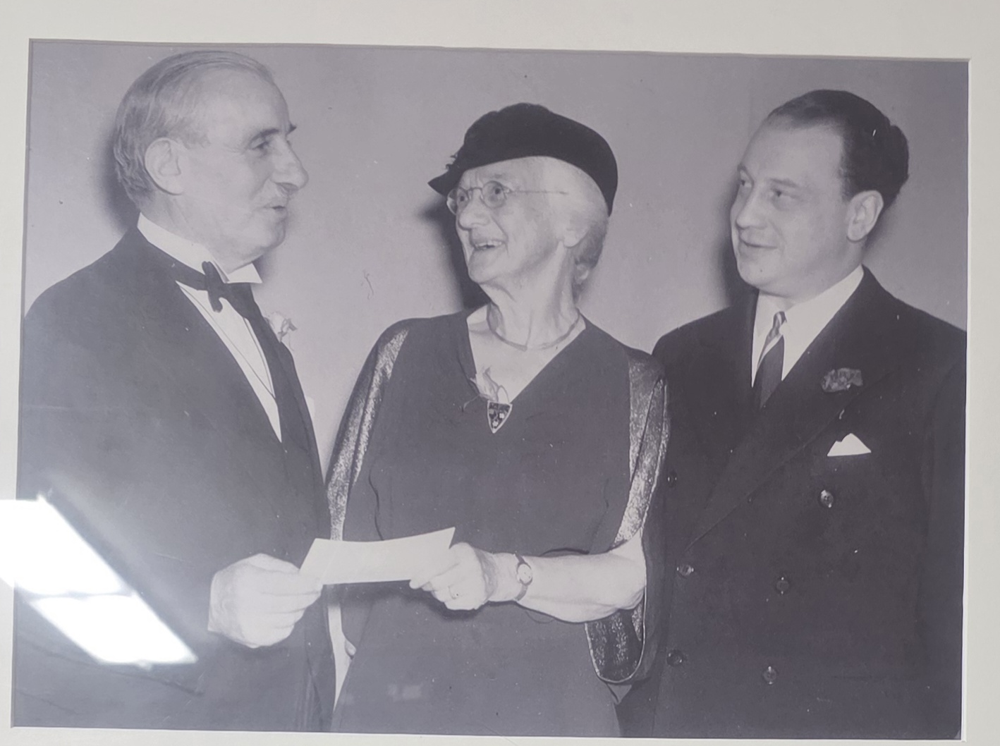

The Founder
LIGHTHOUSE IS FOUNDED BY ESTHER KELLY
How a Center City socialite turned a borrowed pair of Bible-study rooms at Episcopal Hospital, in just four years, into one of the most important settlement houses in American history — and seeded a century of American soccer.

A Center City Socialite With a Cause. Esther W. Kelly was raised in well-off Philadelphia society on 17th Street between Spruce and Pine — five miles across the city from the smokestacks and saloons of Kensington. Beginning in the early 1880s, she made the trip to visit her brother Howard, a young physician interning at the Episcopal Hospital at Front & Lehigh Streets. While in the neighborhood she taught Sunday school to mill-workers' children.
1893 — The Panic, the Saloons, and a Decision. When the Panic of 1893 collapsed the American economy — over three years, 15,000 businesses, 600 banks, and 74 railroads failed; national unemployment hit nearly 20 percent — Kensington took the heaviest blow. The neighborhood at that moment housed 135 saloons within a five-block radius. Bradford asked Episcopal Hospital for the use of two rooms, two nights a week, to teach Bible study to men.
Two Borrowed Rooms, Two Years. From 1893 to 1895, Bradford ran her entire mission out of those two loaned Episcopal Hospital rooms. Bible study quickly broadened into reading classes, sewing circles, savings clubs, and any other practical help she could offer mill workers and their families. The demand outgrew the rooms almost immediately — two years inside borrowed walls was all it took to convince her she needed a building of her own, on Kensington soil, run on her own terms.
1895 — 140 W. Lehigh Avenue. Rather than commute, Bradford moved into Kensington. Backed by her brother Howard and the Union Benevolent Association, she acquired a three-story building at 140 W. Lehigh Avenue — the structure locals simply called The Lighthouse — and threw it open as a settlement house, library, child-care center, and recreation facility. Within a few short years, she was president of one of the most influential community organizations in Philadelphia.
1897 — The Boys Club. In 1897, the Church Club of Philadelphia — a lay Episcopal men's society — partnered with Bradford to formally launch the Lighthouse Boys Club as a structured athletic and educational arm of her settlement work. The boys' club enrolled approximately 350 members in its first month, at $1.00 a year — about $40 in today's money — uniform included. To keep costs down, uniforms were reused and handed down season after season so every boy who showed up had a kit.
A Woman in Charge, Before Women Could Vote. Bradford led The Lighthouse a full generation before American women won the right to vote in 1920. She stood alongside Jane Addams (Hull House, Chicago, 1889) and Stanton Coit (Neighborhood Guild, New York, 1886) as one of the foremost settlement-house founders of the Progressive Era — and the only one to seed what Wikipedia describes as “the dominant U.S. youth soccer club of the early twentieth century,” and what the American Soccer History Archives call “the legendary Lighthouse Boys Club”: 5 U-19 national championships, 7 National Soccer Hall of Famers, 2 FIFA World Cup players, and 4 U.S. Olympians, all from a single Kensington club.
"The struggling community inspired Lighthouse founder Esther Kelly Bradford to organize a social center where neighbors could mingle, train for employment, take advantage of educational opportunities and locate necessary resources for day-to-day living."
— Randi Kamine, Historical Society of Pennsylvania, on PhilaPlace
Sources
“The team was the dominant U.S. youth soccer club of the early twentieth century.” Wikipedia, Lighthouse Boys Club. en.wikipedia.org/wiki/Lighthouse_Boys_Club
“A strong performance by a group of relative unknowns, many of whom were products of the legendary Lighthouse Boys Club.” American Soccer History Archives, on the 1954-55 Uhrik Truckers. homepages.sover.net/…/1954-55.html
 Before it was a manicured soccer complex, the vast open footprint of Lighthouse Field served as the local staging grounds for the world-famous traveling Ringling Brothers and Barnum & Bailey Circus. The “Greatest Show on Earth” pitched its tents on the same Front & Erie ground that would later host championship pro soccer.
Before it was a manicured soccer complex, the vast open footprint of Lighthouse Field served as the local staging grounds for the world-famous traveling Ringling Brothers and Barnum & Bailey Circus. The “Greatest Show on Earth” pitched its tents on the same Front & Erie ground that would later host championship pro soccer. Girls' Club activity across the decades was a vivid catalog: a Lighthouse kindergarten for Kensington's working mill mothers; tennis, a senior girls' basketball team that won a tournament, and bowling on the same Lighthouse lanes the Men's Club used; a pottery class turning out cups and saucers; performances on the Lighthouse stage; soap, hanger-grip, and bake sales to fund the club; and the famous Bobby Sox and Rock and Roll dances. Longtime Girls' Club and tennis director Agnes McDonald ran the program for decades. The 1929-30 LGC basketball team at right — captain Anna Karkin with the trophy at her feet and a basketball lettered LGC 29-30 in her lap, coach Miss R. Cole standing behind the back row — is the Girls' Club tournament-winning side. The bowler at left is a 1950s Girls' Club bowling session from the Lighthouse photo archive.
Girls' Club activity across the decades was a vivid catalog: a Lighthouse kindergarten for Kensington's working mill mothers; tennis, a senior girls' basketball team that won a tournament, and bowling on the same Lighthouse lanes the Men's Club used; a pottery class turning out cups and saucers; performances on the Lighthouse stage; soap, hanger-grip, and bake sales to fund the club; and the famous Bobby Sox and Rock and Roll dances. Longtime Girls' Club and tennis director Agnes McDonald ran the program for decades. The 1929-30 LGC basketball team at right — captain Anna Karkin with the trophy at her feet and a basketball lettered LGC 29-30 in her lap, coach Miss R. Cole standing behind the back row — is the Girls' Club tournament-winning side. The bowler at left is a 1950s Girls' Club bowling session from the Lighthouse photo archive.